기계정비산업기사 (2012-05-20 기출문제)
1과목: 공유압 및 자동화시스템
1. 유압 회로 내에서 설정압력 이상으로 유압유가 동작될 때 설정압력 초과분의 압력을 탱크로 바이패스 시켜 회로내의 과부하를 방지하는 기능을 가진 압력제어 밸브는?
- 릴리프 밸브
- 시퀀스 밸브
- 감압 밸브
- 압력 스위치
(정답률: 84%)

2. 공기가 왕복운동을 하는 피스톤 부분과 직접 접촉하지 않기 때문에 공기에 기름이 섞이지 않으므로 깨끗한 공기를 필요로 하는 식품. 의약품, 화학 산업에 사용되는 압축기는 무엇인가?
- 피스톤 압축기
- 격판 압축기
- 배인 압축기
- 스크류 압축기
(정답률: 78%)
3. 다음 그림과 같은 회로에서 속도 제어밸브의 접속방식은?
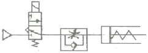
- 미터인 방식
- 미터 아웃 방식
- 블리드 오프 방식
- 파일럿 오프 방식
(정답률: 71%)
4. 공압 윤활기에서 사용되는 윤활유의 설명으로 틀린 것은?
- 윤활성이 좋아야 한다.
- 마찰계수가 적어야 한다.
- 열화의 정도가 적어야 한다.
- 일반적으로 윤활유는 ISO VG 45 이상을 사용한다.
(정답률: 86%)
5. 윤활유를 분무 급유하는 루브리케이터(lubricator)의 작동원리는 ?
- 파스칼 원리
- 베르누이의 원리
- 벤투리 원리
- 연속의 원리
(정답률: 68%)
6. 외부의 압력부하가 변하더라도 회로에 흐르는 유량을 항상 일정하게 유지시켜 주면서 유압모터의 회전이나 유압 실린더의 이동속도를 제어하는 밸브는?
- 온도 보상형 유량 조절 밸브
- 압력 보상형 유량 조절 밸브
- 단순 교축 밸브
- 분류 밸브
(정답률: 90%)
7. 오일 히터의 최대 열용량 와트 밀도로 적당한 것은?
- 2 W/cm2 이하
- 5 W/cm2 이하
- 7 W/cm2 이하
- 10 W/cm2 이하
(정답률: 57%)
8. 기체는 압력이 일정하게 유지하면서 온도를 상승시키면 체적이 증가되는 것을 알 수 있으며 체적증가는 온도 1℃ 증가함에 따라 체적이 1/273.1 씩 증가한다. 이 법칙을 무엇이라 하는가?
- 보일의 법칙
- 샤를의 법칙
- 연속의 법칙
- 베르누이의 법칙
(정답률: 74%)
9. 유압 모터의 특징으로 틀린 것은?
- 소형 경량으로도 큰 출력을 낼 수 있다.
- 토크 제어의 기계에 사용하면 편리하다.
- 최대 토크를 제한하는 기계에 사용하면 편리하다.
- 회전 속도는 쉽게 변화시킬 수 있으나 역회전을 할 수 없다.
(정답률: 78%)
10. 공압장치가 유압장치에 비해 특히 좋은 점은?
- 온도에 민감하다.
- 저압이기에 효율이 좋다.
- 공기를 사용하기 때문에 인화의 위험이 없다.
- 작동요소의 구조가 복잡하다.
(정답률: 84%)
11. 전단계의 작업완료여부를 리밋 스위치나 센서를 이용하여 확인한 후 다음 단계의 작업을 수행하는 것으로써 공장 자동화에 많이 이용되는 제어는?
- 조립제어
- 파일럿 제어
- 메모리 제어
- 시퀀스 제어
(정답률: 85%)
12. 투광기와 수광기로 되어 있으며, 검출방식에 따라 투과형, 직접 반사형, 거울 반사형으로 구분되는 센서는?
- 광센서
- 리드 센서
- 유도형 센서
- 정전 용량형 센서
(정답률: 82%)
13. 로터리 인덱싱 핸들링 장치를 이용하여 작업하기에 적합한 것은?
- 전체의 길이에 걸쳐 부분적인 공정이 이루어질 때
- 하나의 가공물에 여러가공 공정을 거쳐야 할 때
- 연속된 동일 작업을 수행할 때
- 스트립 형태의 재질이 길이 방향으로 작업 될 때
(정답률: 79%)
14. 자동화 시스템 유지보수에 관한 설명 중 틀린 것은?
- 설비가 고장을 일으키기 전에 정기적으로 예방 수리를 하여 돌발적인 고장을 줄이는 데 목적이 있는 설비 관련 기법이 PM이다.
- 유지 보수비 지출을 가능한 최소로 하는 것이 전체 생산원가를 줄이는 방법이다.
- 예비부품의 상시 확보 여부는 그 부품의 보관 비용과 고장빈도, 또는 고장 1회당 설비 손실금액을 고려하여 결정 하여야 한다.
- 설비의 상태를 관찰하여 필요한 시기에 필요한 보전을 하는 것을 CM 이라고 한다.
(정답률: 67%)
15. 유압모터의 종류가 아닌 것은?
- 기어형
- 베인형
- 피스톤형
- 나사형
(정답률: 63%)
16. 컨베이어에서 1분에 3000개의 검출체가 이동할 때 통과한 검출체를 계수하기 위한 근접 센서의 최소 감지 주파수 (Hz)는?
- 20
- 30
- 40
- 50
(정답률: 69%)
17. 초음파 센서의 특징으로 틀린 것은?
- 비교적 검출거리가 길다.
- 투명체도 검출할 수 있다.
- 먼지나 분진 연기에 둔감하다.
- 특정, 형상, 재질 , 색깔은 검출할 수 없다.
(정답률: 72%)
18. 래더 다이어그램(ladder diagram)의 회로 구성에 사용되지 않는 논리조건은?
- AND
- OR
- NOT
- STC
(정답률: 88%)
19. 어떤 시스템에서 목표값과 비교할 수 있는 장치가 있어 외부 조건 변화에 수정동작을 할 수 있는 제어계는?
- 폐회로 제어계
- 개회로 제어계
- 시퀀스 제어계
- 정성적 제어계
(정답률: 63%)
20. 실린더가 불규칙적으로 작동할 경우, 고려해야할 고장 원인으로 적합하지 않은 것은?
- 작동유의 점성감소
- 밸브의 작동불량
- 펌프의 성능불량
- 배관내의 공기 흡입
(정답률: 50%)
2과목: 설비진단관리 및 기계정비
21. 1950년대 미국 GE사에서 제창한 것으로 생산성을 높이기 위한 보전으로 경제성을 강조한 보전방식은?
- 사후보전
- 생산보전
- 계량보전
- 보전예방
(정답률: 76%)
22. 커플링으로 연결되어 있는 2개의 회전축의 중심선이 엇갈려 있을 경우로서 통상 회전주파수 또는 고주파가 발생하는 이상현상은?
- 언밸런스
- 미스얼라인먼트
- 풀림
- 오일 휩
(정답률: 66%)
23. 차음벽이 고유진동 모드의 주파수로 입사한 소음과 공진 하는 영향 요소와 거리가 먼 것은?
- 차음벽의 강성
- 차음벽의 무게
- 차음벽의 표면
- 내부 댐핑
(정답률: 54%)
24. 리차드무더(Richard Muther)에 의한 총체적 공장배치계획 단계 절차가 순서대로 된 것은?
- P-Q분석 →흐름→활동상호관계분석→면적상호관계분석
- P-Q분석 →면적상호관계분석→흐름→활동상호관계분석
- 흐름→활동상호관계분석→P-Q분석 →면적상호관계분석
- 흐름→활동상호관계분석→면적상호관계분석 →P-Q분석
(정답률: 63%)
25. 진동차단기의 기본 요구조건과 거리가 먼 것은?
- 차단기의 강성은 그에 부착된 진동보호대상체의 구조적 강성보다 작야야 한다.
- 차단기의 강성은 차단하려는 진동의 최저 주파수보다 작은 고유 진동수를 가져야 한다.
- 온도, 습도, 화학적 변화 등에 의해 견딜 수 있어야 한다.
- 강성을 충분히 크게 하여 차단능력이 있어야 한다.
(정답률: 66%)
26. dB단위로 음압레벨(SPL)의 정의로 맞는 것은? (단,P는 측정값, Po는 최저 가청압력이다.)
- SPL = 20 log (P/Po) dB (Po = 20μPa)
- SPL = 10 log (P/Po) dB (Po = 20μPa)
- SPL = 20 log (P/Po) dB (Po = 2 x 10-6 N/m2)
- SPL = 10 log (P/Po) dB (Po = 2 x 10-6 N/m2)
(정답률: 58%)
27. 신뢰성의 대상물이 사용되어 처음 고장이 발생할 때까지의 평균시간은?
- 평균고장간격
- 고장률
- 평균고장시간
- 보전성
(정답률: 82%)
28. 보전 작업관리의 특징을 설명한 것 중 틀린 것은?
- 다양성 및 복잡성
- 가혹한 조건
- 투입비용 과다
- 표준화 곤란
(정답률: 45%)
29. 하중과 마찰이 증대하여 유막이 파괴되는 것을 방지하기 위해 사용되는 극압제가 아닌 것은?
- 염소 (CI)
- 규소 (SI)
- 유황 (S)
- 인 (P)
(정답률: 55%)
30. 설비를 구성하고 있는 부품의 피로, 노화현상 등에 의해서 시간의 경과와 함께 고장률이 증가하는 시기는?
- 초기 고장기
- 우발 고장기
- 마모 고장기
- 라이프 사이클
(정답률: 83%)
31. 생산설비나 시스템의 생애주기 동안에 회사의 모든 조직과 기능이 설비의 효율극대화를 위하여 추진하는 전사적인 생산보전을 무엇이라고 하는가?
- 6 Sigma
- TQC
- TPM
- LCC
(정답률: 86%)
32. 설비보전 조직 중에서 공장의 모든 보전요원을 한 관리자 밑에 조직하고 모든 보전을 집중 관리하는 보전 방식의 특징과 거리가 먼 것은?
- 부품과 자재관리의 집중화가 가능하며, 적은 재고로도 가능하다.
- 인재가 집중되어 분업전문화가 진전되며, 기술의 추진 속도가 빠르다.
- 보전대상이 특정설비이기 때문에 작업의 숙련도가 높다.
- 보전에 관한 책임이 확실하다.
(정답률: 46%)
33. 설비관리의 조직 계획에서 분업의 방식이 아닌 것은?
- 기능 분업
- 지역분업
- 직접 분업
- 전문기술분업
(정답률: 73%)
34. 서로 다른 파동 사이의 상호작용으로 나타나는 음의 현상을 무엇이라 하는가?
- 음의 반사
- 음의 굴절
- 음의 간섭
- 음의 회절
(정답률: 76%)
35. 설비투자의 경제성 평가를 위하여 중요한 비용개념으로서 주어진 상황에서 회수할 수 없는 과거의 원가로써 고려대상이 되는 어떠한 대안에도 부과할 수 없는 비용은?
- 기회비용
- 매몰비용
- 대체비용
- 생애비용
(정답률: 59%)
36. 주기(T), 주파수(f), 각진동수(ω)의 관계가 올바른 것은?
- ω = 2πf
- ω = 2πT
- T = ω / π
- f = 2π / ω
(정답률: 78%)
37. 중점설비 분석에 관한 설명이 잘못된 것은?
- 현재 사용되고 있는 설비의 능력을 파악한다.
- 정지 손실의 영향이 큰 설비를 파악한다.
- 설비환경과 작업조건이 열화에 미치는 영향이 큰 설비를 파악한다.
- 원재료 불량이 품질에 영향을 미치는 상태를 파악한다.
(정답률: 68%)
38. 설비를 관리하기 위해서는 생산현장에서 보전요원이나 엔지니어가 보전 업무를 실시하는 기능이 필요하다. 다음중 설비보전의 실시기능과 관계가 가장 먼 것은?
- 고장분석 방법 개발
- 점검 및 검사
- 주유, 조정 및 수리 업무
- 설비개조를 위한 가공업무
(정답률: 58%)
39. 보전측면에서 MP(보전예방) 설계 시 착안 사항과 관계가 없는 것은?
- 부품 교환이 용이한가.
- 유닛(unit) 교환이 되는가.
- 도면 관리가 간편한가.
- 윤활유의 교환 및 급유가 편리한가.
(정답률: 76%)
40. 가공 및 조립형 설비의 6대 로스에 속하지 않는 것은?
- 고장 로스
- 속도저하 로스
- 순간정지 로스
- 계획정지 로스
(정답률: 77%)
3과목: 공업계측 및 전기전자제어
41. 시료를 통에 넣어 회전시켜 점도를 측정하는 점도계는?
- 회전형
- 진동식
- 모세관식
- 버너식
(정답률: 79%)
42. 전원 전압을 안정하게 유지하기 위해서 사용되는 다이오드는 다음 중 어느 것인가?
- 터널 다이오드
- 제너 다이오드
- 버렉터 다이오드
- 발광 다이오드
(정답률: 85%)
43. 전달함수
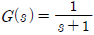
인 제어계 응답을 시간함수로 맞게 표현한 것은?(오류 신고가 접수된 문제입니다. 반드시 정답과 해설을 확인하시기 바랍니다.)- e-t
- 1+e-t
- 1-e-t
- e-t-1
(정답률: 57%)
44. 다음 중 불대수의 법칙으로 옳지 않은 것은?
- A+1=1
- Aㆍ1=A
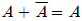
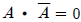
(정답률: 67%)
45. 전하를 축적할 목적으로 두 개의 도체 사이에 절연물 또는 유전체를 삽입한 것을 무엇이라고 하는가?
- 저항
- 콘덴서
- 코일
- 변압기
(정답률: 77%)
46. 콘덴서의 용량을 나타내는 단위는?
- [A]
- [F]
- [W]
- [mH]
(정답률: 72%)
47. 전기기기에서 히스테리시스손을 경감시키기 위한 방법은 다음 중 어느 것인가?
- 성층 철심 사용
- 보상 권선 설치
- 규소 강판 사용
- 보극 설치
(정답률: 58%)
48. 피드백 제어시스템에서 안정도와 관련이 있는 것은?
- 전압
- 주파수 특성
- 이득여유
- 효율
(정답률: 51%)
49. 그림에서와 같이 계측기의 측정량을 증가시킬 때와 감소시킬 때 동일 측정량에 대하여 지시값이 다른 경우가 있는데 이와 같이 생기는 오차로서 ( ) 안에 맞는 것은?
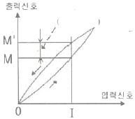
- 히스테리시스 오차
- 직선적 오차
- 정특성 오차
- 감특성 오차
(정답률: 80%)
50. 그림의 회로에서는 SCR을 동작시키려면 X점의 전압을 몇 [V]로 하면 되는가? (단, 다이오드를 동작시키는데 필요한 게이트 전류는 정상 상태에서 20[mA] 이다)
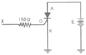
- 3.0
- 3.6
- 7.0
- 7.5
(정답률: 50%)
51. 직류 직권 전동기의 벨트운전을 금하는 이유는?
- 손실이 많이 발생하므로
- 출력이 감소하므로
- 벨트가 벗겨지면 무구속 속도가 되므로
- 과대 전압이 유기되므로
(정답률: 78%)
52. 저항 R[Ω], 리액턴스 X[Ω]가 직렬로 연결되어 있고, 임피던스가 Z[Ω]인 부하에 교류전원이 가해졌을 때 역률은?
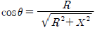
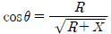
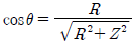
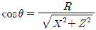
(정답률: 58%)
53. 유량에 따라 테이퍼관 내를 상하로 이동하는 부자의 위치에 의해 유량을 지시하는 유량계는?
- 차압식 유량계
- 면적식 유량계
- 용적식 유량계
- 터빈식 유량계
(정답률: 56%)
54. 다음 중 전자 계전기의 기능이라 볼 수 없는 것은?
- 증폭기능
- 전달기능
- 연산 기능
- 충전기능
(정답률: 70%)
55. 타여자 발전기의 전기자 저항 0.1[Ω]에 50[A]의 부하전류를 공급하여 단자전압 200[V]를 얻었다. 발전기의 유도기전력은 몇 [V]인가?
- 200
- 450
- 195
- 2⑤
(정답률: 56%)
56. 제어밸브 구동부의 동력원으로 공기압이 많이 사용되는 이유에 적합하지 않은 것은?
- 구조가 간단하다.
- 방폭성을 보유하고 있다.
- 비용이 저렴하다.
- 고정밀도가 있다.
(정답률: 60%)
57. 다음 중 파고율을 잘 나타낸 것은?
- 최대값/실효값
- 실효값/최대값
- 평균값/최대값
- 실효값/평균값
(정답률: 51%)
58. 10진수 25를 2진수로 변환하면?
- 10011
- 11010
- 11001
- 11100
(정답률: 70%)
59. 그림과 같은 회로의 특징은?
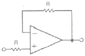
- 입력 임피던스를 낮게 잡을 수 있다.
- 출력 임피던스를 높게 잡을 수 있다.
- 입력과 같은 극성의 출력을 얻을 수 있다.
- 동상입력 전압의 범위에서 사용하므로 CMRR의 영향이 없다.
(정답률: 60%)
60. 진성 반도체에 첨가 물질을 도핑하여 n형 반도체를 만들기 위한 도핑 물질은?
- 갈륨
- 인듐
- 붕소
- 비소
(정답률: 50%)
4과목: 기계정비 일반
61. 베어링 사용 시 주의할 점이 아닌 것은?
- 진동 또는 충격 하중에 견디도록 하여야 한다.
- 마찰에 의해서 발생하는 열을 흡수하여야 한다.
- 먼지 침입에 주의하여야 하고 윤활제의 열화에 적당한 조치를 하여야 한다.
- 베어링의 압력과 미끄럼 속도에 따라 윤활유의 종류를 선정하여야 한다.
(정답률: 76%)
62. 소형원심 펌프의 흡입관 끝에 사용되는 밸브는?
- 푸트 밸브
- 슬루스 밸브
- 글러브 밸브
- 로터리 밸브
(정답률: 48%)
63. 구멍이 있는 플러그를 회전시켜 유체의 통로를 간단히 개폐할 수 있고 작은 지름의 관로나 배출용으로 쓰이는 밸브는?
- 언로드 밸브
- 시퀀스 밸브
- 메인 콕
- 이압 밸브
(정답률: 58%)
64. 유로방향의 수로 분류한 콕의 종류가 아닌 것은?
- 이방 콕
- 삼방 콕
- 사방 콕
- 오방 콕
(정답률: 82%)
65. 다음 정비용 공구 중 체결 공구가 아닌 것은?
- 양구 스패너
- 기어 풀러
- L - 렌치
- 조합 스패너
(정답률: 82%)
66. 일반 배관용 강관의 기호 중 배관용 탄소 강관을 나타내는 것은?
- SPW
- SPA
- SUS
- SPP
(정답률: 66%)
67. 기어 감속기의 분류 중 교쇄 축형 감속기에 해당하는 것은?
- 웜 기어
- 스퍼 기어
- 헬리컬 기어
- 스파이럴 베벨 기어
(정답률: 60%)
68. 펌프의 부식에 관한 설명 중 옳은 것은?
- 유속이 느릴수록 부식되기 쉽다.
- 온도가 낮을수록 부식되기 쉽다.
- 재료가 응력을 받고 있는 부분은 부식되기 쉽다.
- 유체내의 산소량이 적을수록 부식되기 쉽다.
(정답률: 71%)
69. 전동기의 고장 원인에서 기동 불능에 대한 원인으로 옳지 않은 것은?
- 퓨즈 융단
- 기계적 과부하
- 시동버튼 스위치 작동 불량
- 전원 전압의 변동
(정답률: 68%)
70. V-벨트 전동장치에 사용되는 벨트에 관한 설명 중 틀린것은?
- 허용장력의 크기에 따라 6종류로 규정하고 있다.
- A 등급이 가장 큰 허용장력을 받을 수 있다.
- 벨트의 길이는 조정할 수가 없어 생산 시에 여러 가지 길이의 규격으로 제공한다.
- 벨트의 단면 규격도 표준규격이 제정되어 있다.
(정답률: 80%)
71. 전동기의 운전 중 점검 항목으로 볼 수 없는 것은?
- 전압
- 회전수
- 베어링 온도 상승
- 브러쉬 습동 상태
(정답률: 70%)
72. 펌프 분해 검사에서 매일 점검항목이 아닌 것은?
- 베어링 온도
- 흡입 토출 압력
- 패킹상자에서의 누수
- 펌프와 원동기의 연결 상태
(정답률: 62%)
73. 플랜지형 커플링의 센터링 작업을 할 때에 사용되는 측정기 사용상 주의사항으로 잘못된 것은?
- 측정기의 선단을 손가락 끝으로 가볍게 밀어올리고 가만히 내린다.
- 눈금을 읽는 시선은 측정면과 직각방향이어야 한다.
- 사용 중에 스핀들(spindle)에 기름을 주지 않는다.
- 가열되었어도 즉시 측정한다.
(정답률: 82%)
74. 공기를 압축할 때 압력 맥동이 발생하는 압축기는?
- 왕복식 압축기
- 원심식 압축기
- 축류식 압축기
- 나사식 압축기
(정답률: 60%)
75. 기어를 분해할 때 주의 사항 중 옳지 않은 것은?
- 분해는 깨끗한 작업장에서 시행한다.
- 분해한 기어박스와 케이싱을 깨끗이 닦는다.
- 정비 후 기어 박스에 오일은 가득 채운다.
- 내부 부품을 주의하여 취급한다.
(정답률: 83%)
76. 피치가 2mm인 세줄나사 스크류잭을 2회전 시켰을 때 이동 거리는 얼마인가?
- 2mm
- 4mm
- 6mm
- 12mm
(정답률: 71%)
77. 밸브 취급상의 일반적인 주의 사항으로 옳지 않은 것은?
- 밸브를 열 때는 처음에 약간 열고 기기의 상태를 확인하면서 소정의 열림 위치까지 연다.
- 밸브를 완전히 열 때는 개폐 손잡이를 정지할 때 까지 완전히 회전시킨 후 그대로 개폐 손잡이를 잠궈 둔다.
- 밸브를 닫을 때 밸브가 진동을 일으키면 빨리 닫는다.
- 이종 금속으로 이루어진 밸브를 닫을 때는 냉각된 다음 더 죄기를 한다.
(정답률: 50%)
78. 원심펌프에서 수격작용의 방지책이 아닌 것은?
- 펌프의 급 기동을 하지 않는다.
- 배관 구경을 작게 한다.
- 서지탱크를 설치한다.
- 밸브의 급 개폐를 하지 않는다.
(정답률: 78%)
79. 합성고무와 합성수지 및 금속 클로이드 등을 주성분으로 제조된 액상 개스킷의 특징이 아닌 것은?
- 상온에서 유동성이 있는 접착성 물질이다.
- 액체 고분자 물질을 주성분으로 한 일액성 무 용제형 강력 봉착제이다.
- 접합면에 바르면 일정시간 후 건조된다.
- 접합면을 보호하고 누수를 방지하고 내압기능을 가지고 있다.
(정답률: 53%)
80. 펌프내부에서 흡입양정이 높거나 흐름속도가 국부적으로 빠른 부분에서 압력저하로 유체가 증발하여 소음과 진동을 수반하는 현상은?
- 수격 현상
- 공동 현상
- 점 침식 현상
- 서어지 현상
(정답률: 56%)